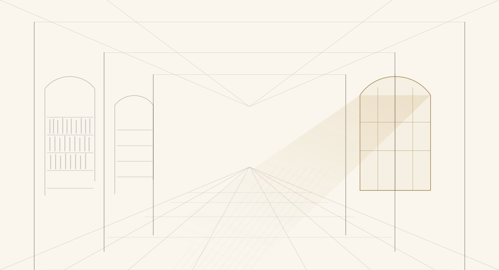

Così volli che fosse
Il lascito testamentario
ApriLasciti
Un futuro che aspetta di essere scritto.
C'è un futuro che aspetta di essere scritto. Diventa tu l'inchiostro.
Negli ultimi anni il testamento solidale ha acquisito una rilevanza crescente a livello internazionale. In Italia è ancora poco diffuso; in altri paesi europei, come il Regno Unito, la cultura del lascito solidale è ormai radicata, e quell'esperienza offre spunti per rendere questa scelta sempre più accessibile.
In queste pagine: che cos'è un lascito testamentario e come si fa; perché farlo alla Rosa d'Oro, con i vantaggi fiscali; come redigere il tuo testamento con noi; e il Dopo di Noi, per chi ha un familiare fragile da proteggere.

Il lascito testamentario
ApriCon i vantaggi fiscali
ApriI tipi di testamento, le DAT
ApriLegge 112/2016
La protezione dei fragili
ApriNella sezione Progetti
Vai alla sezione